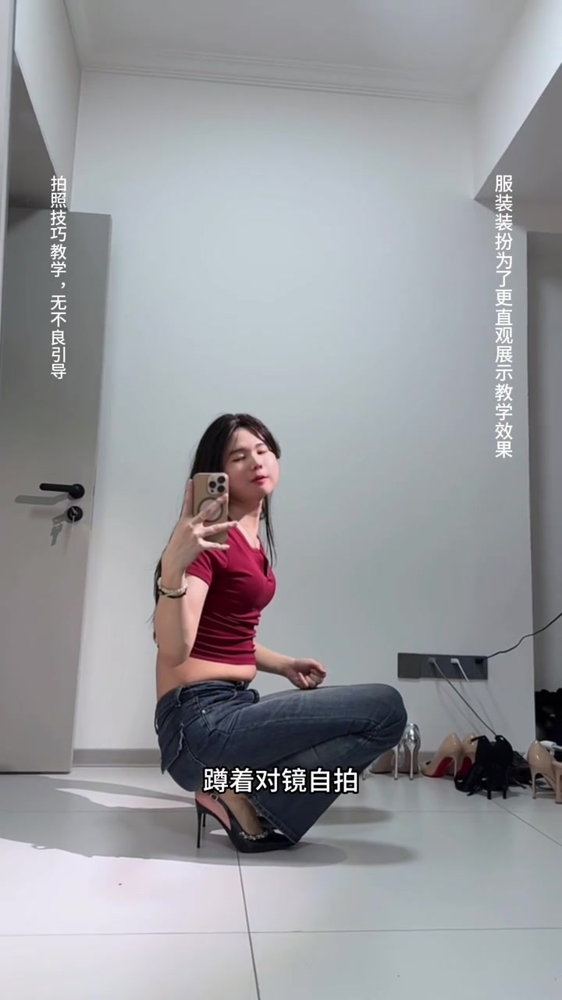
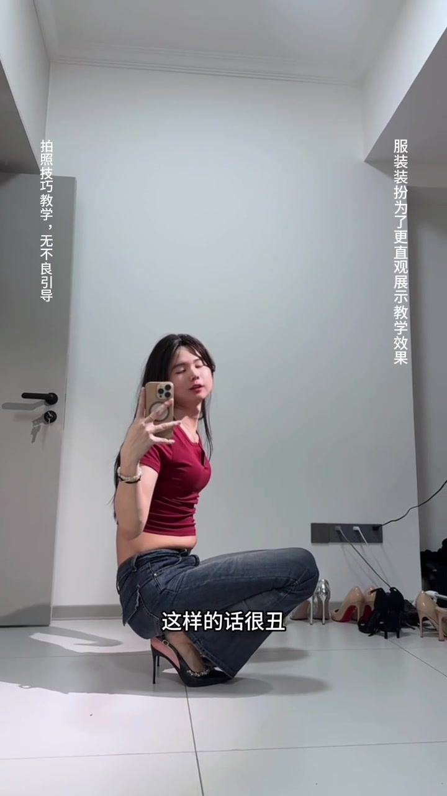
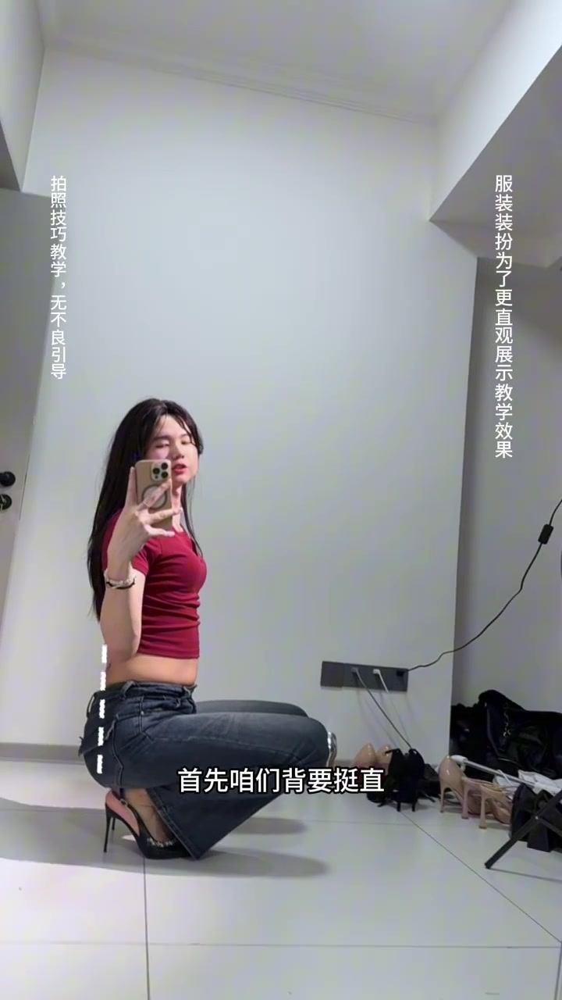
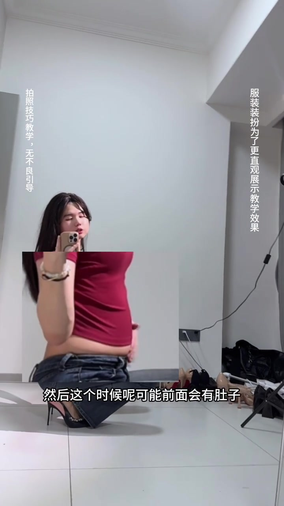
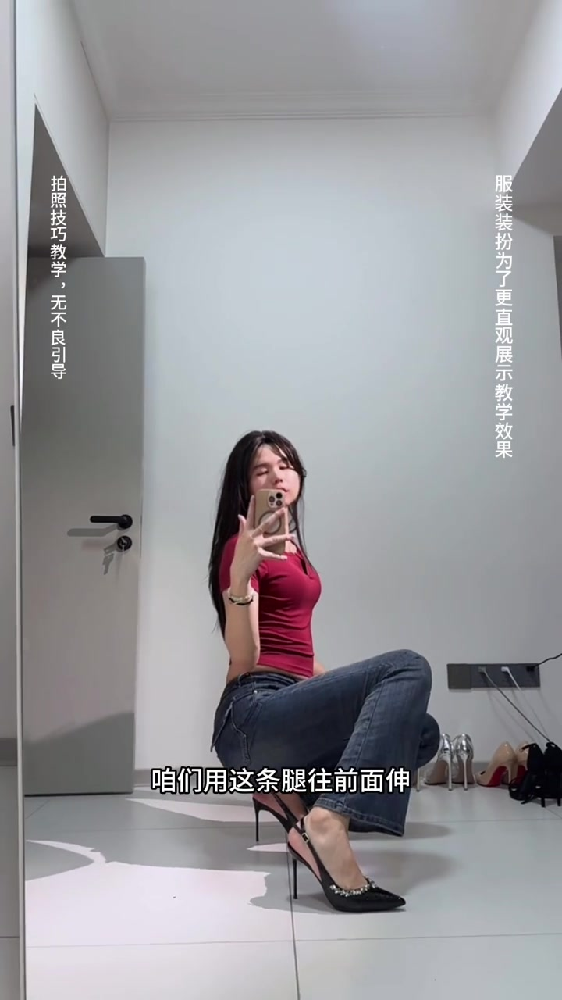
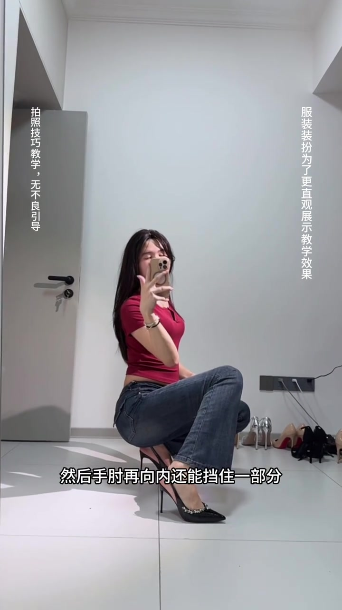
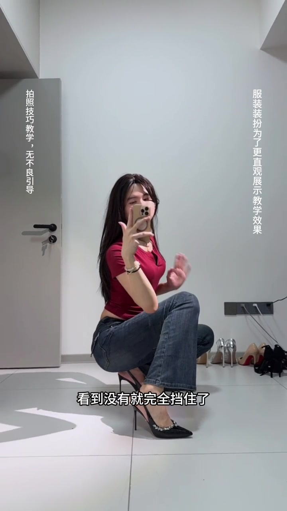
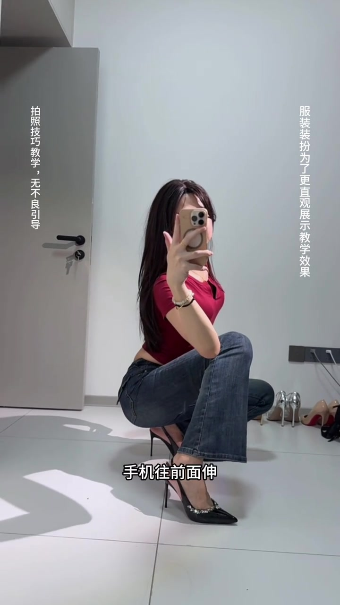

开场：蹲着对镜自拍，不是这样拍的
讲述者穿着红色短袖、牛仔裤和高跟鞋，在白墙房间里蹲下对镜自拍。竖排说明写着“拍照技巧教学，无不良引导”“服装装扮为了更直观展示教学效果”，底部字幕先定调：这是蹲姿示范，而不是随便一蹲。
说明：Whisper 固定按中文识别时，把“拍照／很丑／挺直／手肘／前倾／一个脸／你学会了吗”等误识为音近字；下文叙事以可见字幕与画面为准，文末转录区仍完整保留全部原始分段。

两秒后字幕直接打分：“这样的话很丑”。镜头仍是同一蹲姿，手机举在脸前，腰腹因蹲姿被挤出轮廓——这是后面所有修正动作要解决的问题。
可见字幕校正：“蹲着拍照不是这样子拍的”“这样的话很丑。”

先挺背，再承认前面可能有肚子
纠正从背部开始。画面叠出白色虚线沿背脊竖立，字幕说“首先咱们背要挺直”。讲述者仍蹲着举手机，但躯干被要求拉直，不再塌腰团成一团。

挺直之后，镜头立刻诚实补刀：这个时候前面可能还是会有肚子。画面还叠出腰腹局部小窗，把问题钉在画面中央，并说“但是没关系”——问题先摊开，再靠后续肢体遮挡解决。
可见字幕：“然后这个时候呢可能前面会有肚子”“但是没关系。”

一条腿往前伸，先挡住一部分
讲述者用手指点向身前那条腿，演示“用这条腿往前面伸”。前伸的大腿与膝盖在构图里抬高，正好挡在腰腹前方，字幕同步说“就能挡住一部分”。

到这里，遮挡逻辑已经清楚——不是勒肚子，而是把腿放进前景，利用遮挡改变可见轮廓。
手肘向内，身体前倾，全部挡住
腿挡住一层还不够。讲述者把持手机一侧的手肘再向内收，字幕说还能挡住一部分；接着身体往前倾，镜头里腰腹被前腿、手臂与躯干折叠进一步盖住。

大约十六秒处，画面跳出黄色大字“全部挡住！”，字幕确认“看到没有就完全挡住了”。反例里的肚子轮廓，在这一连串动作后从镜头中消失。
可见字幕：“然后手肘再向内还能挡住一部分”“看到没有就完全挡住了。”

背继续挺好，手机前伸吃近大远小
遮挡完成后，讲述者回头叮嘱背部：记得继续挺好，把背部曲线弄好。画面用白色虚线箭头沿下背向上勾，提醒遮腹时不要把背塌回去。
最后一招落在手机距离上：手机往前面伸，利用“近大远小”，让手机在构图里更大，更能挡住脸；太近反而挡不住。收尾字幕问“你学会了吗”。
可见字幕：“手机往前面伸”“因为太近的话就挡不住”“手机近大远小嘛”“你学会了吗。”

三十秒里发生了什么
从“蹲着很丑”开始，视频按时间把动作排成一条线：挺背 → 承认肚子 → 腿前伸 → 手肘内收 → 身体前倾全部挡住 → 保持背曲线 → 手机前伸吃近大远小。页面后半是 Whisper 原始分段，便于对照音近误识。